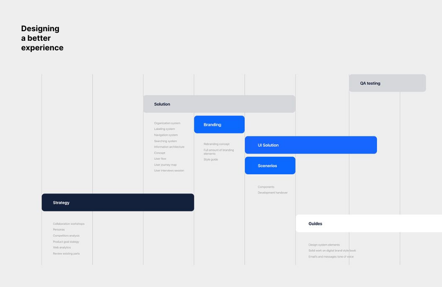

¿Por qué es importante diseñar un buen plan?

Diseñar un buen plan de investigación le permitirá al equipo enfocar bien su trabajo, obtener datos útiles y tomar decisiones coherentes que conduzcan a resolver problemas y mejorar la experiencia de las personas.
Un plan de investigación coherente está alineado con los objetivos, las preguntas, la hipótesis y las técnicas.
El objetivo de la investigación en la que estás participando es entender por qué las personas usuarias abandonan el último paso del onboarding de la funcionalidad para gestionar metas de ahorro.
Para eso, es necesario confirmar cuáles son las preguntas que realmente ayudan a que Simón y tú cumplan este objetivo y cuáles son las técnicas más adecuadas.